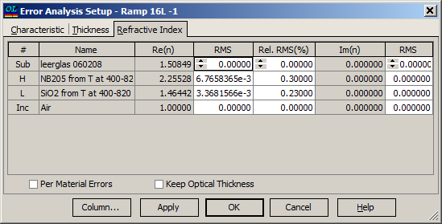

Refractive Index Error Analysis Setup
Refractive Index Errors Analysis Setup Procedure
Navigation: OptiLayer Menu Commands > Analysis Menu > Errors Analysis >
Refractive Index Errors Analysis Setup Procedure
` <idh_error_analysis_setup_thick.html>`__ ` <idh_error_analysis.html>`__ ` <idh_error_analysis_results.html>`__
This dialog allows for setting refractive index errors and launching Error Analysis.
Errors in refractive indices, Re(n), can be entered as either absolute or relative values. Errors in extinction coefficients, Im(n), are entered as absolute values only. The default values are set to zero.

To change a root-mean-square error value (RMS) for any layer, select a cell in the corresponding row of the column labeled “RMS” next to either the Re(n) or Im(n) columns. The “Per Material Errors” option sets a specific method for refractive index and extinction coefficient errors:
When it is off (the default), errors in refractive indices and extinction coefficients for each layer are different and independent. In other words, errors are generated on a “per layer” basis.
When it is on, errors in refractive indices and extinction coefficients in all layers of the same material (H, L, …) are the same. In other words, errors are generated on a “per material” basis. The first randomly generated deviation is assigned to all refractive indices of the H layers, the second randomly generated deviation is assigned to all refractive indices of the L layers, and so on. A similar procedure is applied to extinction coefficients if necessary.
If “Keep Optical Thickness” is active, then the deviations of refractive indices and thicknesses are connected so that the optical thickness of a layer with random variations in thickness and refractive indices is equal to the initial optical thickness of the same layer. In this case, only the refractive index error is provided by a random value. The corresponding variation of thickness is computed using the just-mentioned relation. The “Column…” button allows easy access to the Column Editor.
The “OK” button accepts the changed values and starts the Error Analysis procedure. Its results are displayed in the Error Analysis Results window.
See also